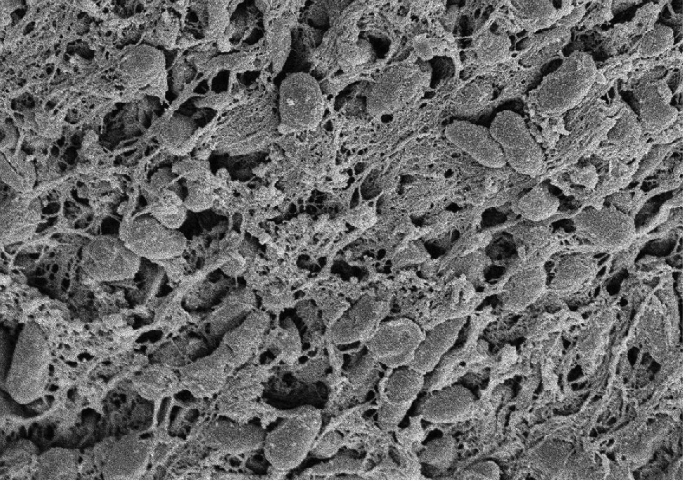
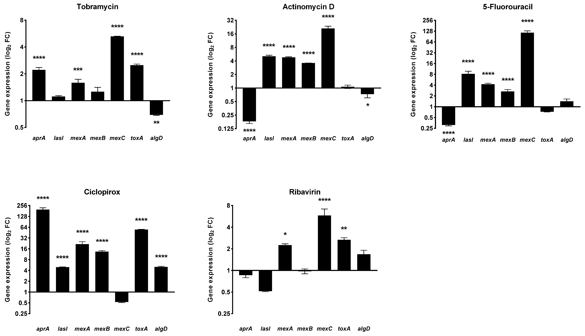
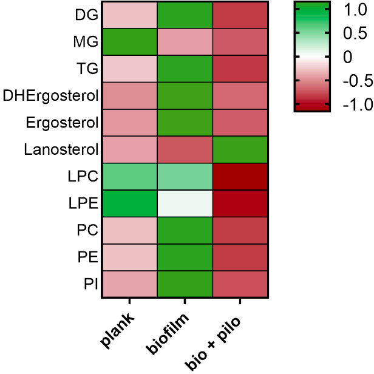

Nuove attività antimicrobiche da uno screening di farmaci
Uno screening di 3.386 molecole individua candidati da approfondire contro Pseudomonas aeruginosa in condizioni sperimentali rilevanti per la fibrosi cistica.


Studiamo biofilm, virulenza e interazioni tra microrganismi e ospite per affrontare le domande delle infezioni difficili da trattare.
Biofilm, virulenza e infezioni persistenti, con particolare attenzione alla fibrosi cistica.
P. aeruginosa, S. maltophilia e S. aureus.
Microbiologia sperimentale, modelli di infezione e valutazione delle strategie antimicrobiche.
Il TMASlab collega lo studio dei microrganismi alla valutazione di possibili strategie contro le infezioni persistenti. Ci interessa comprendere come il biofilm, la virulenza e l’ambiente dell’infezione influenzino la risposta ai trattamenti.
Come riescono i patogeni a persistere nell’ospite e quali processi possiamo colpire per contrastarne la sopravvivenza e il danno?
Comprendere questi processi permette di individuare vulnerabilità microbiche e valutare approcci da sviluppare ulteriormente nella ricerca preclinica.
Studiamo insieme microrganismo, ospite e trattamento, confrontando attività antimicrobica, effetti sul biofilm e risposta nei modelli di infezione.
Studiamo la formazione dei biofilm e la risposta ai trattamenti, distinguendo gli effetti sulla comunità da quelli sulle cellule che la compongono.
Approfondisci02Valutiamo strategie dirette contro adesione, comunicazione e fattori di virulenza, affiancando lo studio della crescita a quello del comportamento microbico.
Approfondisci03Esploriamo farmaci sviluppati per altre indicazioni per individuare attività antibatteriche, antibiofilm e antivirulenza da approfondire sperimentalmente.
Approfondisci04Confrontiamo molecole singole e combinazioni per verificare quando l’associazione migliori l’attività antimicrobica e quando non offra un vantaggio.
Approfondisci05Affianchiamo le misure microbiologiche a modelli sperimentali utili a comprendere le interazioni tra patogeno, ambiente dell’infezione e ospite.
ApprofondisciDocenti, collaboratori e tesisti condividono ricerca, formazione e confronto scientifico.
Uno screening di 3.386 molecole individua candidati da approfondire contro Pseudomonas aeruginosa in condizioni sperimentali rilevanti per la fibrosi cistica.
Il confronto con tobramicina su 24 isolati clinici distingue attività antibatterica, vitalità del biofilm e biomassa residua.

Uno studio di farmaci non antibiotici confronta attività antibatterica, effetti sul biofilm e potenziale citotossico.

Lo studio collega gli effetti della pilocarpina alla composizione lipidica e proteica del biofilm fungino.

Il confronto tra crescita e sopravvivenza aiuta a capire perché alcune comunità microbiche rispondano diversamente ai trattamenti.
LeggiDalla selezione delle molecole alla verifica dei risultati: il percorso che trasforma un primo segnale in una domanda scientifica.
LeggiIl percorso divulgativo presentato per il 26 settembre 2026: osservare, fare domande e mettere alla prova il proprio ragionamento.
LeggiCondividiamo la ricerca attraverso contenuti divulgativi ed esperienze interattive, per esplorare il mondo dei microrganismi e il ruolo degli antibiotici.
Per collaborazioni scientifiche, informazioni sulle attività del gruppo e opportunità di tirocinio e tesi.